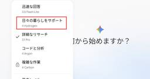

ITmedia AI＋ 最新記事一覧
https://www.itmedia.co.jp/aiplus/
生成AIを中心とするAIのビジネス活用にフォーカス。業務改善や新規事業の応用事例、活用方法、機能比較、ルール整備といった情報を読者に日々届けることで、AI活用をサポートします。
フィード

【追記あり】M365障害、ChatGPT／Claudeのコネクタにも影響 「ほとんどのリクエストで動作しない」 6
6
ITmedia AI＋ 最新記事一覧
「Microsoft 365」の複数サービスで障害が発生しており、OpenAIの「ChatGPT」とAnthropicの「Claude」のMicrosoft 365コネクタも正常に動作していないと両社が報告している。
4時間前
NVIDIAをつくった男、ジェンスン・フアン “デニーズの皿洗い“から“AI時代の主役“へ、激動の半生 1
ITmedia AI＋ 最新記事一覧
ダイナーの一角から、AI時代の主役「NVIDIA」を生み出したジェンスン・フアン氏。“皿洗い”から億万長者へと至った半生を振り返る。
17時間前

Googleの社内専用コーディングAI「GfG」、その全容 Geminiに社内データ1兆トークン学習させ開発 所要時間半減の業務も 4
ITmedia AI＋ 最新記事一覧
米Googleなどに所属する研究者らが10月に発表した論文「Customizing an LLM for Enterprise Software Engineering」は、AIに企業独自の膨大な開発データを学習させ、社内システム開発に特化したコーディングモデルを構築する手法とその実用効果をまとめた研究報告だ。
2日前

「好機が来た」――なぜ今Sakana AIは、イチからAIモデルを作るのか “新たな一手”のねらいを聞いた 19
ITmedia AI＋ 最新記事一覧
既存モデルの活用に注力してきたSakana AIが、自社で一からAIモデルの開発を始めた。なぜ今なのか。背景や狙いを聞いた。
2日前

「AI処理、データ非保持が守られず」――Notionが委託先の問題指摘、漏えいの恐れ巡り 1
ITmedia AI＋ 最新記事一覧
クラウド型ワークスペース「Notion」のAI機能「Notion AI」のチャット記録が漏えいした恐れがある事案を巡り、Notion運営の米Notion Labsは、法人向けプランでZDR（ゼロデータ保持）を利用するーユーザーでも漏えいした可能性があることを明らかにした。
2日前

Google、高速で低価格の「Gemini 4 Hydrogen」発表 無料ユーザーも利用可能 20
ITmedia AI＋ 最新記事一覧
Googleは、AIエージェントによる作業や日常的なコーディングに向けた高速・高効率の新モデル「Gemini 4 Hydrogen」を発表した。「Gemini 3.8 Flash」の約2.5倍の速さでタスクを終え、推論の深さを4段階から選べる。APIやGeminiアプリなどで同日から順次提供している。
2日前

NECがデータカタログ1435個を1年で整備 AIによる意思決定支援への挑戦 2
ITmedia AI＋ 最新記事一覧
NECは5年間でデータ基盤を整え、従業員から経営トップまでが同じダッシュボードで判断する文化を定着させた。だが、AIで経営の意思決定を支援する段階に進もうとしたとき、人の利用を前提に整備したデータカタログだけでは「足りない」ことに気付いたという。何が足りず、どう補おうとしているのか。同社の関徳昭氏が講演で語った。
2日前

設計／製造から工場運用へ、オートデスクが描く工場全体の最適化戦略 1
ITmedia AI＋ 最新記事一覧
オートデスクは、製品の設計／製造から工場の計画／設計、シミュレーション、設備保全まで支援領域を広げている。「JIMTOF2026」の開催にあわせて来日した米国本社の幹部2人に、M&Aを通じた事業領域の拡大や、工場全体の最適化に向けた構想、AI活用の方向性などについて話を聞いた。
2日前

AIエージェントを「追えない、止められない」 約半数が経験する“暴走”、浮上する3つの盲点 2
ITmedia AI＋ 最新記事一覧
APIセキュリティベンダーSalt Securityの調査では、約半数の組織がAIエージェントによる意図しない行動を確認していることが分かった。一方で組織は、AIエージェントの想定外の行動を自動的に止められていない。対策として何が求められるのか。
2日前

JR九州の非IT部門がGeminiでPythonアプリを内製開発 2?3カ月で完成させた方法
ITmedia AI＋ 最新記事一覧
JR九州は「Google Workspace with Gemini」を導入して非エンジニアによる業務アプリの内製化を進めている。IT人材不足や外部ベンダー依存といった課題の解決だけではない、同社が内製開発に取り組む理由とは。
2日前
なぜゾーホーは「広告を載せない」のか？ 情報漏えいを防ぐ「独自の設計」、AI研究責任者に聞く 2
ITmedia AI＋ 最新記事一覧
企業で機密情報の漏えいが相次いでいる。業務効率化とデータ保護の板挟みになる中、インドのゾーホーは、無料版でも広告を載せず「顧客データをAI学習に一切使わない」設計を敷く。自社データを競合へ流出させず、安全にAIを活用する防衛術を、同社AI研究責任者のラムプラカーシュ・ラーマムールティー氏に聞いた。
2日前

NVIDIAのAIモデル「Nemotron」が日本語合成データセットを素早く投入できる理由
ITmedia AI＋ 最新記事一覧
NVIDIAは、東京都内で開催したAIエージェントの技術イベント「NVIDIA Agentic AI Day Japan 2026」において、日本語AIの開発を支援する2つの合成データセット「Nemotron-Personas-Finance-Japan」と「Nemotron-PII-Japan」について説明した。
2日前

AIに書かせたkintoneのコード、そのまま使って大丈夫？ 無料診断の提供始まる
ITmedia AI＋ 最新記事一覧
業務に合わせて柔軟にカスタマイズできる「kintone」。だが、AIで生成したコードや外部プラグインには、APIキーの埋め込みや脆弱性など、動作確認だけでは見つけにくいリスクがある。
2日前

総務省が新しい無料オンライン講座「統計解析プログラミング」を1月に開講 Pythonでのデータ分析が4週間で学べる 289
ITmedia AI＋ 最新記事一覧
総務省統計局が、Pythonで統計解析と主要な分析手法を学ぶ無料オンライン講座「“わかる・使える”統計解析プログラミング」を2027年1月12日に新規開講する。主成分分析、回帰分析、ランダムフォレストから需要予測の演習まで、4週間の中身と受講の条件を整理する。
2日前
Notionの「AIチャット流出懸念」影響広がる 国内企業が相次ぎ報告 「打ち合わせ内容」も漏えいか 44
ITmedia AI＋ 最新記事一覧
クラウド型ワークスペース「Notion」のAI機能「Notion AI」のチャット記録が漏えいした恐れがある事案に起因し、情報流出した可能性があるとする日本企業の報告が相次いでいる。
2日前
AWS、AIエージェント向けに強力な隔離環境とネイティブなEC2性能を備えた軽量VM「AWS Nitro Sandboxes」提供開始 1
ITmedia AI＋ 最新記事一覧
米Amazon Web Services（AWS）は、Amazon EC2インスタンス上でほぼネイティブのEC2性能で動作しつつ、Nitroシステムハードウェアレベルのきわめて強力な隔離環境を備えた軽量な仮想マシン「AWS Nitro Sandbox」の提供開始を発表しました。
2日前

パナソニックが250人体制で挑む「フィジカルAI」 職人の暗黙知をAI化、外販も視野に 1
ITmedia AI＋ 最新記事一覧
パナソニックホールディングス（HD）は11月11日、AIとロボットを組み合わせた「フィジカルAI」の研究開発を強化する方針を明らかにした。約250人体制で開発を進め、工場や物流など自社が強みを持つ領域で3～5年先を見据えて事業成果につなげる。
2日前

AI「Muse」専用メアド開始、「日本で取れた」報告続々 メール送受信も任せられる 41
ITmedia AI＋ 最新記事一覧
ユーザーは、Museのメアドから店舗などに予約メールを送らせたり、予定関連のメールをMuseのメアドに転送してカレンダーに予定を入れさせたりできるようになる。
2日前

Google DeepMind、「AlphaGenome 2」発表 細胞の種類ごとにDNA変異の影響を予測するAI 15
ITmedia AI＋ 最新記事一覧
Google DeepMindは、DNA配列が特定の細胞種に与える影響を予測する次世代AIモデル「AlphaGenome 2」を発表した。1億超の細胞データで学習し、細胞の種類や状態を条件指定して予測できる。疾患に関わる遺伝子変異の特定精度を前モデルから大幅に向上させており、非営利目的ならAPI経由で利用できる。
3日前